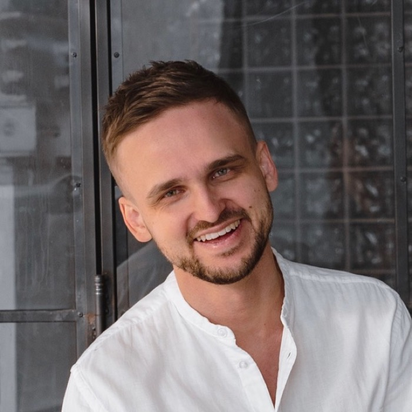

Для собственников, топов и соло-практиков 35-50 на плато
Когда план есть,
а движения нет
Найти за полтора часа корень того, что блокирует движение, и собрать три действия с критериями и шагом на 48 часов.
«10 из 10 за Сбор» — топ-менеджер 40+, переход в bigtech · май 2026 →

Алексей Шаповалов — системный диагност для собственников и топов в фазе перехода